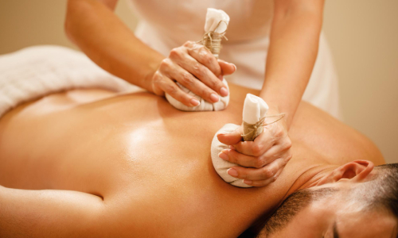
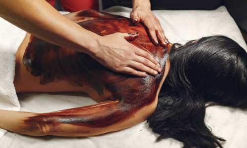
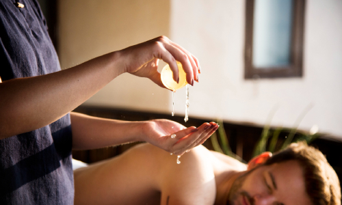
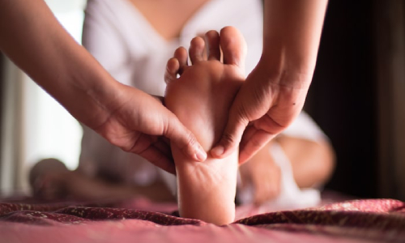
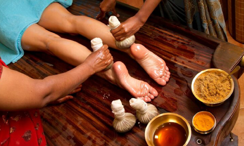
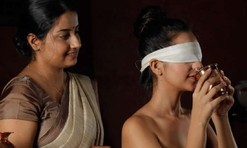
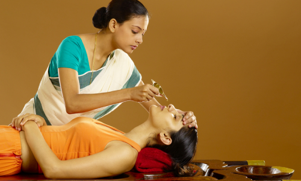

A traditional Ayurvedic full-body oil massage that uses warm herbal oils to rejuvenate the body and mind. This natural therapy enhances blood circulation, supports lymphatic drainage, and promotes deep relaxation and detoxification. Ideal for restoring balance, vitality, and skin health.
Is a powerful Ayurvedic dry powder massage that aids in weight loss, detoxification, and cellulite reduction.This treatment uses upward strokes with herbal powders to stimulate blood circulation and Clear away dull, dead skin cells promoting a healthy glow.Ideal for improving body tone, boosting metabolism, and enhancing overall skin health naturally.


The Ayurvedic head massage, uses warm herbal oils and gentle strokes to nourish the scalp, neck, and shoulders.It effectively reduces stress, anxiety, headaches, and migraines while enhancing hair health and sleep quality.This therapy helps balance Vata and Pitta doshas, supporting both mental clarity and emotional well-being
The traditional Ayurvedic foot massage enhances blood circulation, relaxes the nerves, and calms the mind.It helps relieve foot pain, stiffness, and fatigue, promoting deep stress relief and restful sleep.

Ayurvedic facial massage boosts skin radiance, improves blood circulation, and promotes a youthful glow.This natural therapy helps reduce wrinkles, tighten facial muscles, and rejuvenate dull skin.It also supports emotional balance by relieving stress and enhancing overall well-being.
Ayurvedic oil therapy helps relieve headaches, stress, depression, and muscle tension.This traditional treatment promotes deep relaxation, balances the nervous systemIt is highly effective for managing joint pain, muscle spasms, and promoting holistic healing.


Takra means buttermilk,Dhara means Pouring in stream.In Takradhara treatment, buttermilk processed with medicinal herbs poured in thin stream over the forehead & scalp.This treatment is an effective in conditions such as - psoriasis, Hypertension, Lack of Sleep & Neurological conditions
Kashaya Dhara is a classical Ayurvedic therapy that involves the pouring of warm medicated milk over the forehead & scalp in a rhythmic manner.It is a variation of Shirodhara where instead of oil, processed milk with herbs are used.


Ayurvedic milk therapy that supports digestive health by nourishing the intestines.It helps relieve constipation, stomach pain, and inflammation in the gut naturally.This gentle treatment boosts immunity, improves digestion, and promotes overall wellness.
A specialized Ayurvedic therapy that targets lower back pain and spinal discomfort.It helps reduce muscle stiffness, spasms, and improves flexibility and mobility.This warm oil treatment deeply nourishes the back muscles, promoting long-lasting relief and spinal health.

An Ayurvedic therapy that provides targeted relief for knee joint pain and stiffness.It uses warm, medicated oils to reduce inflammation, improve joint lubrication, and enhance mobility.Ideal for arthritis, injury recovery, and chronic knee conditions, it supports natural joint healing and strength.
A traditional Ayurvedic treatment that helps reduce muscular chest pain and supports healthy lung function.This therapy is highly effective for respiratory health, chest stiffness, and enhancing overall cardiac wellness.


Navarakizhi is a rejuvenating Ayurvedic therapy where warm boluses of medicated Navara rice are tied in cloth pouches and made into a Pottali (kizhi) applied warm to the body. It relieves muscle pain, strengthens the nervous system, improves circulation, nourishes tissues, enhances skin texture, and boosts overall vitality.
An Ayurvedic herbal poultice therapy, helps relieve muscle pain, joint stiffness, and arthritis-related discomfort.The heated herbal bundles boost blood circulation and relaxation.This traditional Ayurvedic treatment is highly effective for pain management, inflammation reduction, and overall wellness.Tied with cloth Made into pottali (kizhi), heated and applied to body with gentle tapping and massage.


Podi kizhi is a classical Ayurvedic fomentation (Swedana) therapy where herbal powders (choorna) are tied in a cloth pouch (kizhi), heated, and applied to the body with gentle tapping and massage.Mainly useful in Vata-Kapha disorders such as: Osteoarthritis, Cervical/lumbar spondylosis, Chronic Rheumatoid arthritis, Sciatica, Musculoskeletal pain.
A traditional Ayurvedic steam therapy, supports deep detoxification by eliminating toxins through sweat.It provides effective pain relief, improves blood circulation, and boosts respiratory and skin health naturally.This therapy also balances Vata and Kapha doshas, enhances digestion, and promotes total mind-body wellness.

A traditional Ayurvedic steam therapy is highly effective in managing rheumatism and chronic joint pain.It helps relieve muscle stiffnessand promotes deep relaxation through therapeutic heat.This treatment also enhances skin smoothness and supports detoxification
Ayurvedic immersion therapy is ideal for relieving muscle pain, fatigue, and stiffness.This herbal decoction bath promotes deep tissue relaxation, reduces soreness, and improves circulation naturally.It’s especially beneficial for sports injuries, muscle recovery, and balancing Vata and Kapha doshas.


It is effective in treating joint pain, muscle spasms, and inflammation.It helps improve flexibility, soothe Vata disorders, and support relief from Kapha and Pitta imbalances.Ideal for chronic conditions like arthritis, back pain, and muscle stiffness with long-lasting results.
Ayurvedic medicated steam therapy is highly effective in relieving pain, swelling, and joint stiffness.

A classical Ayurvedic oil bath therapy, promotes detoxification, improves blood circulation, and strengthens immunity.It is highly beneficial in managing muscle spasms, pain, paralysis, and healing bone injuries naturally.
The reduce inflammation, ease bodily pain, and support vein health.These treatments are especially effective in managing varicose veins, improving circulation, and promoting natural healing.Their gentle application provides deep relaxation while restoring dosha balance and enhancing overall wellness.


Dhanyamla Dhara is a classical Ayurvedic therapy where a warm, medicated liquid prepared from fermented cereals, citrus fruits, horse gram, and other medicinal herbs is poured continuously over the body to restore energy and reduce stiffness.This treatment is considered as an effective treatment and remedy for conditions Rheumatoid arthritis, osteoarthritis, frozen shoulder, joint pain, Neuromuscular disorders – Hemiplegia, paralysis, Parkinsonism, Skin diseases.
A therapeutic Ayurvedic oil treatment that helps relieve localized pain, inflammation, and muscle tension.It improves blood circulation, enhances flexibility, and promotes faster healing of affected areas.


An Ayurvedic therapy that uses medicated herbal decoctions to relieve pain, inflammation, and body stiffness.It is especially effective in balancing Pitta and Vata doshas, calming the nervous system, and promoting deep relaxation.
A traditional Ayurvedic eye therapy that nourishes and rejuvenates tired, dry, or strained eyes.This treatment involves bathing the eyes in medicated ghee, improving vision, reducing eye strain, and soothing irritation.It’s highly beneficial for those with digital eye fatigue, glaucoma, and other eye-related conditions


An Ayurvedic herbal head pack, is known to improve memory, relieve migraine, and promote restful sleep.This cooling therapy helps balance Pitta dosha, treat scalp conditions, and enhance hair health and shine.It’s highly effective for stress relief, insomnia, and managing hypertension naturally.
That helps in boosting immunity, reducing stress, and eliminating toxins from the body.It supports better digestion, aids in natural weight loss, and promotes mental clarity and emotional balance.Ideal for rejuvenation and dosha balancing, Panchakarma slows down ageing and restores overall vitality.
A key Ayurvedic Panchakarma therapy that helps relieve constipation, bloating, and chronic fever.It is highly effective for managing sexual disorders, urinary issues, and dissolving kidney stones naturally.Vasti also supports colon health, balances Vata dosha, and promotes deep detoxification and healing.
A key Ayurvedic detoxification treatment that expels excess Kapha and Pitta doshas through therapeutic vomiting.It helps cleanse the stomach and respiratory tract, treating issues like asthma, allergies, and skin diseases.This powerful Panchakarma procedure boosts digestion, enhances metabolism, and promotes overall wellness naturally.
A cleansing Panchakarma therapy that eliminates excess Pitta dosha, supporting natural detoxification.It helps manage skin disorders, allergies, and liver-related issues by purifying the digestive tract.This Ayurvedic treatment enhances liver function, improves gut health, and promotes glowing skin.
Powerful Ayurvedic detox therapy that clears toxins from the head, neck, nose, and sinuses.It helps relieve headaches, migraines, sinusitis, and improves mental clarity and breathing.
An Ayurvedic bloodletting therapy, helps detoxify the blood and improve circulation. It offers instant pain relief and is effective in managing skin diseases, arthritis, and inflammation.This treatment promotes purified blood flow, aiding in overall immune and skin health.
A gentle Ayurvedic enema therapy that helps lubricate joints and reduce inflammation.It is highly beneficial for managing arthritis, lower back pain, and joint stiffness.This treatment promotes flexibility and Vata balance, supporting overall joint and digestive health.
A powerful Ayurvedic oil enema that helps relieve constipation, gas, and lower back pain.It is highly effective in treating neurological disorders and dryness caused by Vata imbalance.
An herbal decoction enema that helps in treating constipation, flatulence, and lower back pain.It is widely used in Ayurveda to manage neurological disorders and support recovery from paralysis.
The traditional Ayurvedic foot massage, helps in relieving deep muscle pain and enhancing flexibility.This unique therapy improves blood circulation, strengthens muscles, and boosts mental clarity.Ideal for athletes and wellness seekers, it also aids in stress relief and natural detoxification.
An Ayurvedic steam therapy, uses heat and aromatic herbs to open pores and release toxins.It promotes deep relaxation, reduces stress, and calms the nervous system naturally.Ideal for detox, Swedana enhances circulation, boosts immunity, and supports mental clarity.